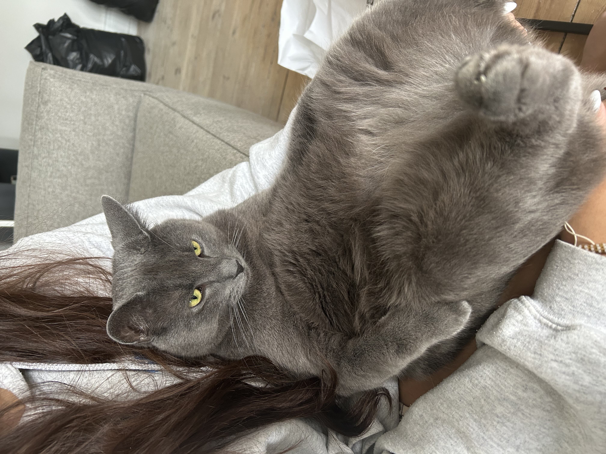

I sommeren 2020 fik jeg mit kæledyr, Alfred, vi kalder ham nu Alfie. Vi hentede ham ude på en bondegård i Helsinge, og derefter tog vi ham med hjem. Han er en grå bondegårdskat med gule øjne. Nu er han vokset sig stor og er blevet en meget rolig, sød og lidt tyk kat.
